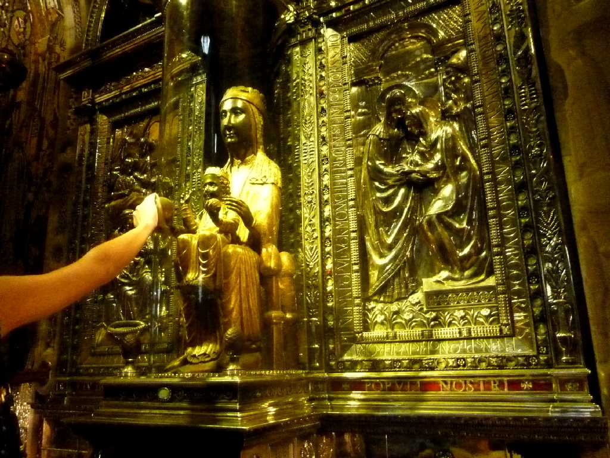
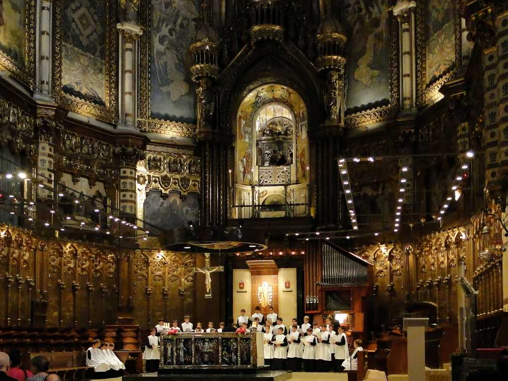
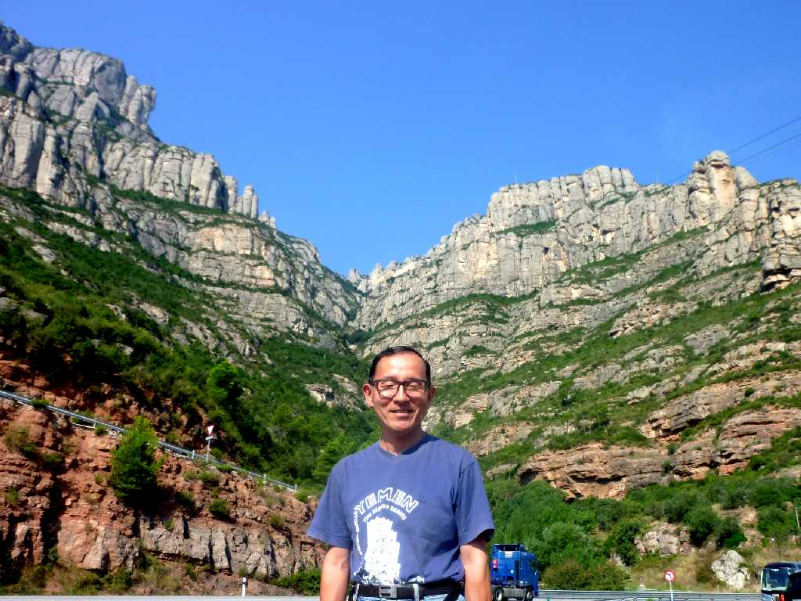

Senora de Montserrat El Monasterio de Santa Maria de Montserrat
１２世紀頃に創られたサンタマリアデモンセラート修道院の黒い聖母はポプラの木像で金箔に覆われている ２時間の行列でやっと触れることができた

El Monasterio de Santa Maria de Montserrat
大行列に並んでいる途中で聖歌が歌われた

September 6 2010 Montserrat
鋸歯状の奇岩が美しいモンセラート山塊 Montserratは鋸歯状の山を意味する